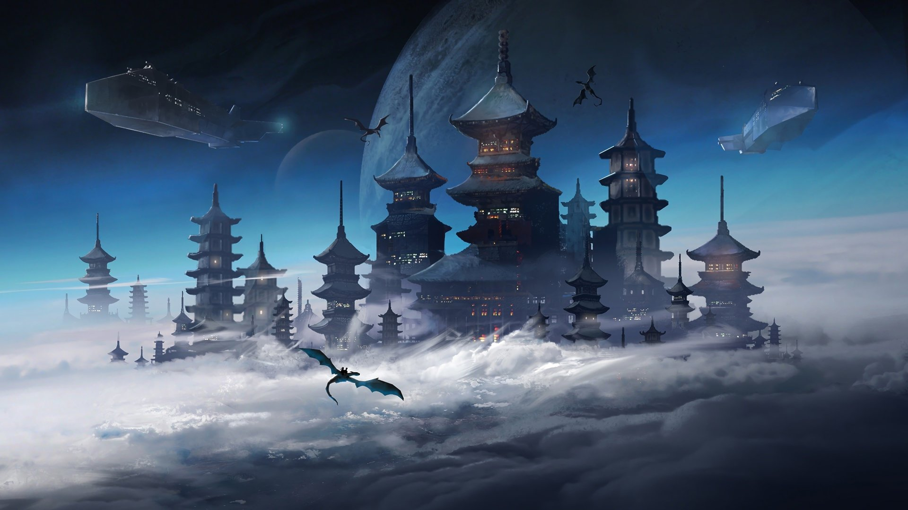
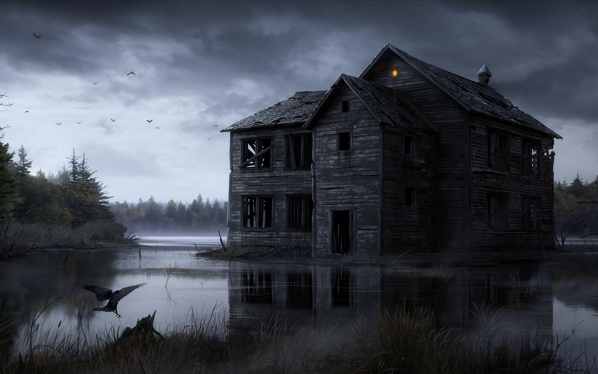
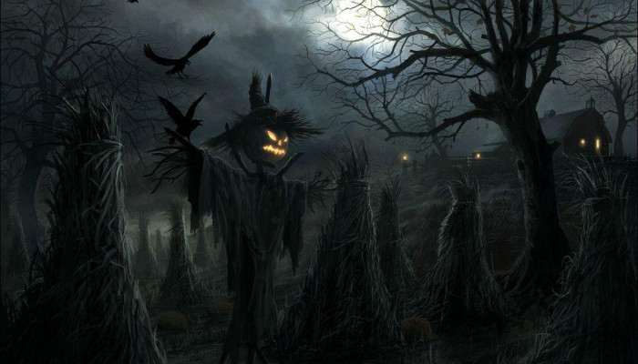
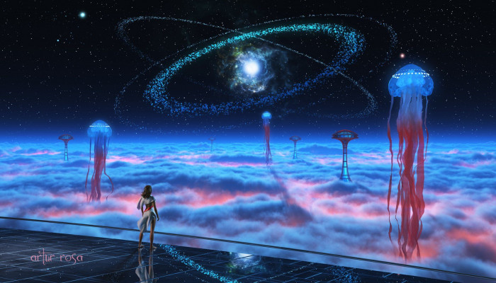
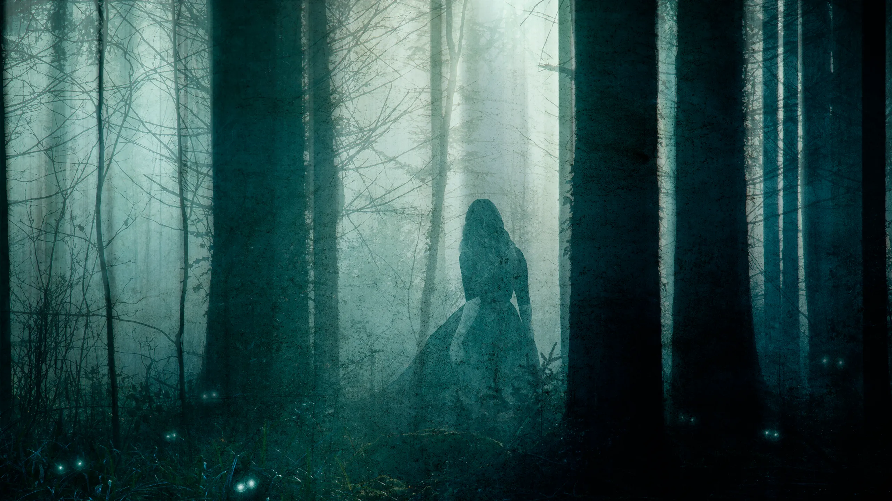
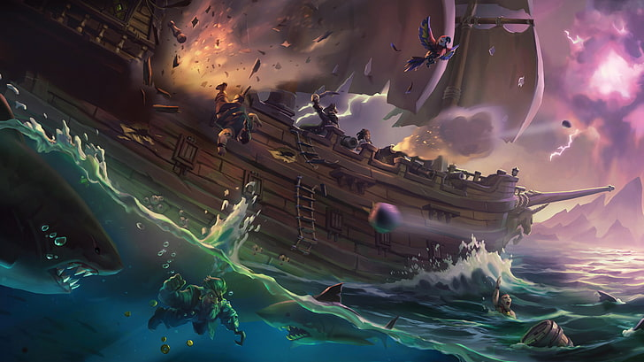
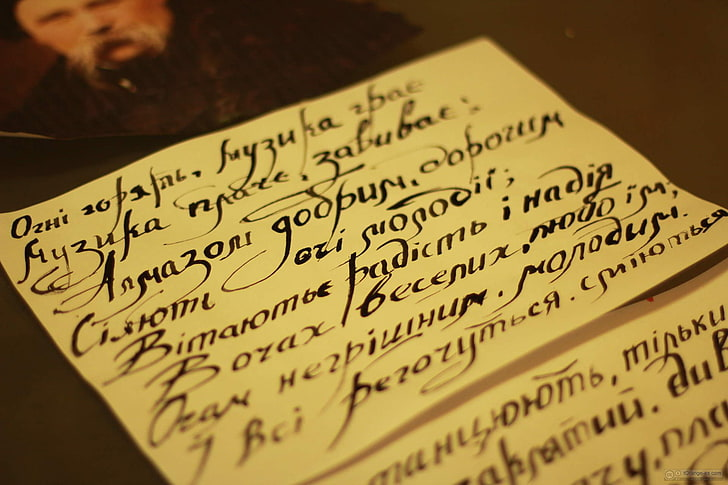
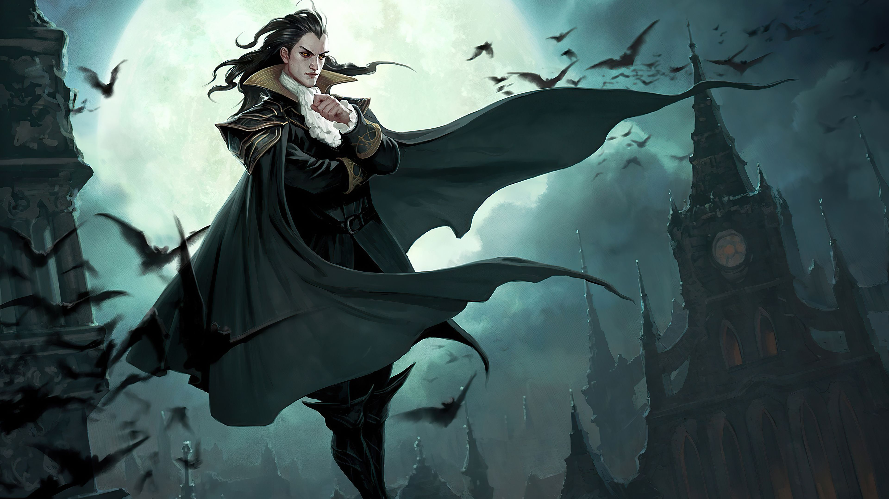
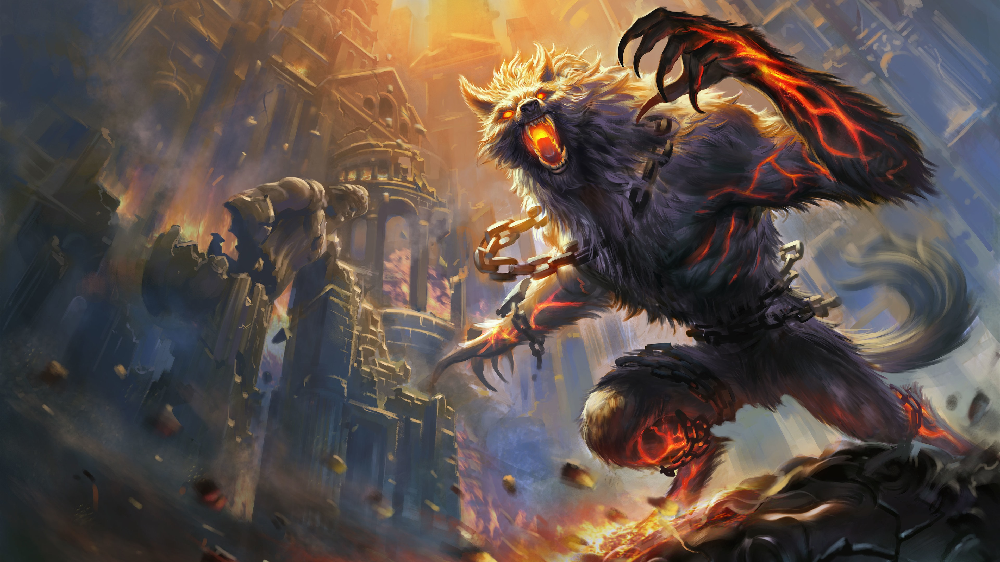
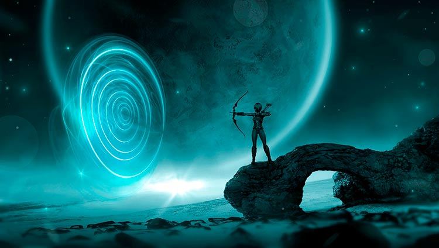

La literatura fantástica es uno de los géneros de mayor éxito, historias que nos trasladan a mundos ficticios que no respetan las leyes de la realidad, con diferentes razas o poderes mágicos, donde vivir infinidad de aventuras.
El romance es una composición poética no estrófica formada por una tirada indefinida de versos octosílabos
que riman en asonante los pares y en la que quedan sueltos los impares.
.
Las historias paranormales abarcan elementos de lo paranormal, como fantasmas, vampiros, cambiaformas y cualquier tipo de criaturas mágicas o de otro mundo.
La literatura de horror es un género de ficción literario que pretende o tiene la capacidad de asustar, causar miedo o aterrorizar sus lectores o espectadores en inducir sentimientos de horror y terror.
Es una obra de ficción, que recrea un periodo histórico preferentemente lejano y en la que forman parte de la
acción personajes y eventos no ficticios.
.
La ciencia ficción es un género narrativo que sitúa la acción en unas coordenadas espacio-temporales imaginarias y diferentes a las nuestras, y que especula racionalmente sobre posibles avances científicos o sociales y su impacto en la sociedad.
Se trata de una ficción creada por fans y para fans, la cual toma un texto original o persona famosa como punto de partida.
Las historias cortas son narraciones breves que pueden ser cuentos, fábulas, mitos o leyendas. Algunas de estas historias están escritas y otras son de transmisión oral.
En la categoría espiritual entrarían obras de ficción y con trama (cuentos o novelas). - Pueden tener que ver con alguna religión (cualquiera) o creencia de índole espiritual.
Un clásico es un libro que está antes que otros clásicos; pero quien haya leído primero los otros y después lee aquél, reconoce en seguida su lugar en la genealogía.

El humor, aparece en la literatura como un producto posterior a las creaciones clásicas y los géneros literarios principales, como una reacción creativa y distanciadora frente a aquello que aparece como oficial y ortodoxo.
El término «suspenso» pasó a designar un género de narrativa (de ficción o de no-ficción) en el que predominan las situaciones de tensión, provocando temor o eventualmente asustando o sobresaltando, al lector o espectador.
Es un género narrativo literario que narra los viajes, el misterio y el riesgo. Una característica recurrente es la acción presente hasta dominar los escenarios, básica para el desarrollo de la trama.
Literatura juvenil es aquella especialmente dirigida a lectores que atraviesan por la juventud, si bien no exclusivamente. Este concepto va a menudo unido al de literatura infantil, enunciándose como literatura infantil y juvenil, si bien guardan algunas características diferenciadoras entre ellos.
La poesía es un género literario escrito en verso o prosa que se caracteriza por expresar ideas, sentimientos e historias de un modo estético y bello
Sobre todo tras la publicación de “Drácula”, la figura del vampiro se convierte en un elemento de referencia de la literatura de terror, sobre todo a partir de su difusión popular en el teatro y el cine, pero trascendiendo más allá hacia otros géneros literarios como la ciencia-ficción, fantasía, etc..
El hombre lobo ha sido uno de los personajes del género de terror, aunque de todo han hecho con él (pobre hombre lobo, si levantara la cabeza), que más juego ha dado a nivel literario
A veces llamada ficción contemporánea, se centra en las experiencias cotidianas y los conflictos de un protagonista, generalmente un adulto, con caracterización y entorno detallados.
